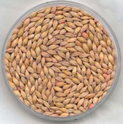

Barley party
After spending a month researching and writing about whole grains at work, I am slowly working them into my diet. Did you know that the leading cause of death in the United States is heart disease, and that the best way to prevent it is simply to eat a few servings of whole grains every day? Well, now you know, and you can start buying spelt, amaranth, quinoa, and barley! (Pearled barley, which is the only kind anyone in their right mind buys, is not entirely whole grain, but it is very nutritious).

Barley is an ancient grain spread around the world by the Spanish. Sad but true story: the Incas called quinoa “mother grain,” but when Spain invaded, they forbade its cultivation and replaced it with barley. Even today, Peruvians hardly eat quinoa because they’ve been told for centuries that it will make them stupid. Anyway, barley isn’t too bad a substitute.
After making a barley with pesto dish from a recipe a few weeks ago, I enjoyed the following variation tonight. I made extra so that n8 can have leftovers for the rest of the week.
Ingredients- A stick of butter, more or less
- 1 onion, diced
- 1 potato, peeled and diced
- 1 1/2 cups pearl barley, soaked for at least an hour, water conserved
- 1 cup white wine
- 1 bay leaf
- 3 cups chicken broth
- A few tablespoons basil pesto (quick recipe below)
- Salt and pepper to taste
- Sauté the onion and potato in two tablespoons of butter.
- Once they brown a bit, add the barley and stir to coat with butter.
- Add the white wine and stir. Toss in the bay leaf.
- Add the chicken broth, cover, and let simmer. Add more broth and barley water as needed until barley is tender.
- Stir in pesto and salt and pepper. Serve very hot.
I added some fresh bread crumbs for a delicious, crispy edge, but that’s entirely optional. In fact, I almost didn’t even put the pesto in, because the barley smelled so good on its own. But I had the pesto in the fridge and had to use it before this weekend. You could decide to leave it out, though, and eat this on its own or as a tasty side dish.
English people apparently like to drink barley water as a refreshing summer beverage, with lemon or lime juice added. And Escoffier kept barley water in his kitchen at all times to keep his staff from drinking on the job. I’ve only eaten it twice, but I like its flavor and chewiness.
If you want to make fresh pesto, all you do is throw some fresh, clean basil leaves in the food processor with olive oil, parmesan cheese, pine nuts, minced garlic, and salt and pepper, and pulse until smooth. If you’re going to store it, pour a bit of olive oil on top so it stays fresh.
Comments
koreans drink barley tea as water basically. i miss it… in fact inspired by your post i’m going to go home and make some!
Add a comment